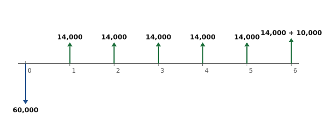

القيمة الحالية تعطي الجواب بالدينار. المديرون يسألون غالبا سؤالا آخر: كم نسبة العائد؟ معدل العائد الداخلي يجيب بنسبة مئوية يسهل مقارنتها بتكلفة التمويل أو بعائد البنك. في هذا الفصل تتعلم حسابه ومعناه، ثم ثلاثة أخطاء شائعة في استخدامه: الاختيار بأعلى معدل، وتجاهل تعدد المعدلات، وافتراض إعادة الاستثمار. في آخر الفصل قسم عن نسبة المنفعة إلى التكلفة، وهي الطريقة المستخدمة في المشاريع العامة.
4.1 تعريف المعدل وحسابه
معدل العائد الداخلي هو النسبة التي تجعل القيمة الحالية للمشروع صفرا:
المعادلة لا تحل مباشرة إلا في حالات بسيطة. باليد نجرب نسبا حتى تتغير إشارة القيمة الحالية، ثم نستكمل بين النسبتين. في Excel الدالة IRR تعمل ذلك تلقائيا.
مثال 4.1: حساب المعدل بالتجربة والاستكمال
مشروع يكلف 60,000 دينار، ويعطي 14,000 دينار سنويا لمدة 6 سنوات، ثم يباع بقيمة 10,000 دينار. ما معدل العائد الداخلي؟

مخطط التدفق النقدي
الحل:
معدل العائد الداخلي هو النسبة i التي تجعل القيمة الحالية صفرا:
لا يوجد حل مباشر لهذه المعادلة، فنجرب نسبا حتى تتغير إشارة القيمة الحالية:
الإشارة تتغير بين النسبتين، فالمعدل بينهما. نقدره بالاستكمال الخطي:
في Excel اكتب التدفقات من السنة 0 إلى السنة 6 في الخلايا من B1 إلى B7:
المعدل الدقيق 13.43%. الاستكمال يعطي تقديرا قريبا جدا لأن المسافة بين النسبتين صغيرة.
عندما يكون الدخل دفعات متساوية بدون قيمة بيع، تكفي الدالة RATE، أو جدول P/A في الملحق.
مثال 4.2: المعدل لدفعات متساوية
آلة تكلف 45,000 دينار وتوفر 11,000 دينار سنويا لمدة 6 سنوات بدون قيمة بيع. ما معدل العائد الداخلي؟
الحل:
القيمة الحالية صفر عندما يساوي المعامل P/A نسبة التكلفة إلى التوفير:
في جدول P/A ابحث في عمود 6 سنوات عن القيمة الأقرب، ثم استكمل بين صفين. في Excel الدالة RATE تعطي الجواب مباشرة:
=RATE(6, 11000, -45000)
المعدل 12.18%.
ما معنى المعدل بالضبط؟ هو العائد على المال الذي لم يسترد بعد في كل سنة، وليس على كامل الاستثمار طوال المدة.
مثال 4.3: معنى المعدل: الرصيد غير المسترد
مشروع يكلف 10,000 دينار ويعطي 3,200 دينار سنويا لمدة 4 سنوات. معدل العائد الداخلي 10.66%. ابن جدولا يبين المبلغ غير المسترد من الاستثمار في نهاية كل سنة.
الحل:
نعامل المشروع كأنه قرض أعطته الشركة للمشروع بنسبة تساوي المعدل. كل سنة يضاف عائد على الرصيد، ويطرح الدخل:
السنة
الرصيد في البداية
العائد على الرصيد
الدخل
الرصيد في النهاية
1
10,000.00
1,066.15
3,200.00
7,866.15
2
7,866.15
838.65
3,200.00
5,504.80
3
5,504.80
586.90
3,200.00
2,891.70
4
2,891.70
308.30
3,200.00
0.00
الرصيد يصل إلى الصفر بالضبط في نهاية العمر. هذا هو معنى معدل العائد الداخلي: النسبة التي يكسبها المال الذي لم يسترد بعد. المعدل لا يقول إن كل الاستثمار يكسب هذه النسبة طوال المدة.
مثال 4.4: المعدل لدخل متدرج
متجر جديد يكلف 40,000 دينار. صافي دخله 6,000 دينار في السنة الأولى، ويزيد 2,000 دينار كل سنة لمدة 5 سنوات. ما معدل العائد الداخلي؟
الحل:
نبحث عن i التي تحقق:
التدفقات في Excel: -40000 ثم 6000 و8000 و10000 و12000 و14000. الدالة IRR تعطي المعدل 6.91%. للتأكد نعوض المعدل في المعادلة:
4.2 القبول والرفض
لمشروع واحد القاعدة بسيطة:
المعدل أكبر من الحد الأدنى للعائد أو يساويه: المشروع مقبول.
المعدل أقل من الحد الأدنى للعائد: المشروع مرفوض.
هذه القاعدة تعطي نفس قرار القيمة الحالية دائما لمشروع تدفقاته عادية: استثمار في البداية، ثم دخل.
مثال 4.5: القرار بالمعدل وبالقيمة الحالية
مشروع يكلف 80,000 دينار، ويعطي 15,000 دينار سنويا لمدة 8 سنوات، وقيمة بيعه 12,000 دينار. الحد الأدنى للعائد 12%. هل يقبل؟ قرر بالمعدل، ثم بالقيمة الحالية.
الحل:
=IRR(B1:B9)
المعدل 11.78%، وهو أقل من الحد الأدنى 12%. القاعدة: يقبل المشروع إذا كان معدله أكبر من الحد الأدنى للعائد أو يساويه.
الطريقتان تعطيان نفس القرار: المشروع مرفوض. هذا صحيح دائما لمشروع واحد بتدفقات عادية، لأن القيمة الحالية تكون موجبة عند كل نسبة أقل من المعدل.
4.3 مقارنة البدائل: التحليل التزايدي
في البدائل المتنافية، أعلى معدل لا يعني أفضل بديل. المثال التالي يبين السبب.
مثال 4.6: أعلى معدل ليس دائما الأفضل
مشروعان متنافيان، عمر كل منهما 5 سنوات، والحد الأدنى للعائد 10%. المشروع X يكلف 10,000 دينار ويعطي 4,000 دينار سنويا. المشروع Y يكلف 30,000 دينار ويعطي 10,000 دينار سنويا. أيهما تختار؟
الحل:
معدل كل مشروع:
كلاهما أعلى من 10%، والمشروع X معدله أعلى. لكن القيمة الحالية:
المشروع Y يضيف ثروة أكبر. المعدل نسبة، والنسبة العالية على مبلغ صغير قد تعطي ربحا أقل من نسبة أقل على مبلغ كبير. المشروع X يترك 20,000 دينار تستثمر بنسبة 10% فقط، بينما المشروع Y يستثمرها بنسبة أعلى. لذلك لا نختار بين بدائل متنافية بأعلى معدل. الطريقة الصحيحة هي التحليل التزايدي في المثال التالي.
الطريقة الصحيحة: نبدأ بالبديل الأرخص، ثم نسأل عن كل مبلغ إضافي: هل يعطي الحد الأدنى للعائد على الأقل؟ معدل الفرق بين بديلين يسمى المعدل التزايدي.
مثال 4.7: التحليل التزايدي لمشروعين
مشروعان متنافيان، عمر كل منهما 8 سنوات، والحد الأدنى للعائد 10%. المشروع أ يكلف 50,000 دينار ويعطي 12,000 دينار سنويا. المشروع ب يكلف 80,000 دينار ويعطي 18,000 دينار سنويا. اختر بالتحليل التزايدي.
الحل:
الخطوة 1: المشروع الأرخص أولا. معدله 17.31%، وهو أعلى من 10%، فهو مقبول ويصبح البديل الحالي.
الخطوة 2: ندرس الفرق. المشروع ب يحتاج استثمارا إضافيا 30,000 دينار، ويعطي دخلا إضافيا 6,000 دينار سنويا. معدل هذا الفرق:
الخطوة 3: القرار. إذا كان معدل الفرق أعلى من الحد الأدنى، فالمال الإضافي يستحق، ونختار البديل الأغلى. هنا المعدل أعلى، فنختار المشروع ب.
لاحظ أن معدل المشروع ب وحده 15.29%، وهو لا يدخل في القرار. القيمة الحالية تؤكد القرار:
في بدائل التكاليف لا يوجد معدل لكل بديل وحده، لأنه لا يوجد دخل. لكن الفرق بين بديلين له معدل: الاستثمار الإضافي يقابله توفير.
مثال 4.8: التحليل التزايدي لبدائل تكاليف
آلتان لنفس العمل، عمر كل منهما 6 سنوات بدون قيمة بيع. الآلة أ تكلف 30,000 دينار وتشغيلها 12,000 دينار سنويا. الآلة ب تكلف 45,000 دينار وتشغيلها 8,500 دينار سنويا. اختر بالتحليل التزايدي بنسبة 10%.
الحل:
في بدائل التكاليف لا يوجد دخل، فلا معنى لمعدل كل آلة وحدها. ندرس الفرق فقط: الآلة ب تكلف 15,000 دينار زيادة، وتوفر 3,500 دينار سنويا.
=RATE(6, 3500, -15000)
معدل الفرق أعلى من 10%، فنختار الآلة ب. القيمة الحالية للتكاليف تؤكد ذلك:
مع أكثر من بديلين، نرتب البدائل حسب التكلفة، ونقارن كل بديل بالأفضل قبله. البديل الذي يفوز يبقى، والذي يخسر يستبعد.
مثال 4.9: ثلاثة بدائل بالتحليل التزايدي
ثلاثة بدائل متنافية، عمر كل منها 8 سنوات، والحد الأدنى للعائد 12%. أيها تختار؟
البديل
التكلفة
الدخل السنوي
1
20,000
6,000
2
30,000
8,500
3
45,000
11,500
الحل:
نرتب البدائل حسب التكلفة، ونبدأ بعدم التنفيذ.
المقارنة الأولى، البديل 1 مقابل عدم التنفيذ:
أعلى من 12%، فالبديل 1 هو الأفضل حتى الآن.
المقارنة الثانية، البديل 2 مقابل البديل 1. الفرق استثمار 10,000 دينار ودخل 2,500 دينار سنويا:
أعلى من 12%، فالبديل 2 يصبح الأفضل.
المقارنة الثالثة، البديل 3 مقابل البديل 2. الفرق استثمار 15,000 دينار ودخل 3,000 دينار سنويا:
أقل من 12%، فالاستثمار الإضافي لا يستحق. القرار: البديل 2.
للتأكد بالقيمة الحالية:
البديل
القيمة الحالية
1
9,805.84
2
12,224.94
3
12,127.86
لاحظ أن معدل البديل 3 وحده 19.35%، أعلى من 12%. لو حكمنا بمعدل كل بديل وحده لقبلناه خطأ.
لماذا يختلف ترتيب المعدلات عن ترتيب القيم الحالية؟ منحنى القيمة الحالية يجيب.
مثال 4.10: منحنى القيمة الحالية ونقطة التقاطع
للمشروعين X وY في مثال سابق، احسب القيمة الحالية لكل منهما عند النسب من 5% إلى 25%. عند أي نسبة يتساويان؟ وكيف يتغير القرار مع الحد الأدنى للعائد؟
الحل:
النسبة
المشروع X
المشروع Y
5%
7,317.91
13,294.77
10%
5,163.15
7,907.87
15%
3,408.62
3,521.55
20%
1,962.45
-93.88
25%
757.12
-3,107.20
منحنى Y أشد انحدارا، لأن دخله أكبر وأبعد في الزمن نسبيا، فيتأثر بالخصم أكثر. المنحنيان يتقاطعان عند النسبة التي تجعل قيمة الفرق صفرا، أي عند معدل الفرق:
إذا كان الحد الأدنى للعائد أقل من 15.24% نختار Y، وإذا كان أعلى نختار X. هذا يفسر لماذا قد يختلف ترتيب المعدلات عن ترتيب القيم الحالية.
القاعدة العامة: التحليل التزايدي بالمعدل، والمقارنة بالقيمة الحالية، يعطيان نفس القرار دائما. أما ترتيب البدائل حسب معدل كل منها وحده فلا يعطيه.
4.4 تعدد المعدلات
معادلة المعدل كثيرة حدود في المتغير x الذي يساوي مقلوب واحد زائد i. كثيرة الحدود قد يكون لها أكثر من جذر. يحدث هذا عندما تتغير إشارة التدفقات أكثر من مرة، مثل مشروع ينتهي بتكلفة إزالة أو إعادة تأهيل.
مثال 4.11: مشروع له معدلان
مقاول يدفع 1,000 دينار اليوم لتجهيز موقع، ويقبض 2,300 دينار بعد سنة، ثم يدفع 1,320 دينار في السنة الثانية لإعادة الموقع إلى حالته. ما معدل العائد الداخلي؟
الحل:
نحسب القيمة الحالية عند عدة نسب:
النسبة
القيمة الحالية
0%
-20.00
5%
-6.80
10%
0.00
15%
1.89
20%
0.00
25%
-4.80
القيمة الحالية صفر عند 10% وعند 20%. للمشروع معدلان، وكلاهما صحيح رياضيا. السبب أن إشارة التدفقات تتغير مرتين: سالب ثم موجب ثم سالب.
أي المعدلين نقارن بالحد الأدنى للعائد؟ لا هذا ولا ذاك. في هذه الحالة نستخدم القيمة الحالية بالحد الأدنى للعائد، أو المعدل المعدل في المثال التالي.
مثال 4.12: كيف تعرف عدد المعدلات قبل الحساب
مشروع تدفقاته من السنة 0 إلى السنة 4: -20,000 ثم 8,000 و9,000 و10,000، ثم -4,000 تكلفة إزالة. كم معدلا يمكن أن يكون له؟ احسبه.
الحل:
قاعدة الإشارات: عدد المعدلات الموجبة لا يزيد عن عدد مرات تغير الإشارة في التدفقات. هنا الإشارة تتغير مرتين، فقد يوجد معدلان.
اختبار المجموع التراكمي: نجمع التدفقات تراكميا:
السنة
0
1
2
3
4
التدفق
-20,000
8,000
9,000
10,000
-4,000
التراكمي
-20,000
-12,000
-3,000
7,000
3,000
إذا بدأ التراكمي سالبا، وتغيرت إشارته مرة واحدة فقط، وانتهى موجبا، فللمشروع معدل موجب واحد فقط. الشرطان متحققان هنا.
المعدل 8.38%. في Excel تعطيه الدالة IRR مباشرة، لأنه الحل الوحيد الموجب.
4.5 المعدل المعدل
المعدل المعدل يستخدم نسبتين واقعيتين: نسبة تمويل تنقل بها التكاليف إلى البداية، ونسبة إعادة استثمار تنقل بها الدخل إلى النهاية. النتيجة نسبة واحدة دائما:
مثال 4.13: معدل العائد الداخلي المعدل
مشروع يكلف 50,000 دينار، ويعطي في السنوات من 1 إلى 5 المبالغ 12,000 و15,000 و18,000 و15,000 و12,000 دينار. الشركة تعيد استثمار الدخل بنسبة 10%. احسب المعدل والمعدل المعدل.
الحل:
معدل العائد الداخلي يفترض ضمنا أن كل دخل يعاد استثماره بنفس المعدل. هذا غير واقعي عندما يكون المعدل عاليا. المعدل المعدل يستخدم نسبة إعادة استثمار واقعية.
الخطوة 1: ننقل كل الدخل إلى السنة 5 بنسبة إعادة الاستثمار:
الخطوة 2: نبحث عن النسبة التي تحول الاستثمار إلى هذا المبلغ:
=MIRR(B1:B6, 10%, 10%)
المعدل العادي 13.45%. المعدل المعدل أقرب إلى نسبة إعادة الاستثمار، لأن جزءا من العائد يأتي منها.
مثال 4.14: المعدل المعدل يحل مشكلة تعدد المعدلات
للمشروع الذي له معدلان في مثال سابق، احسب المعدل المعدل بنسبة تمويل وإعادة استثمار 12%. هل يقبل المشروع إذا كان الحد الأدنى للعائد 12%؟
الحل:
ننقل التدفقات السالبة إلى السنة 0، والموجبة إلى السنة 2:
المعدل المعدل له قيمة واحدة دائما. هو أعلى من 12%، فالمشروع مقبول. القيمة الحالية 1.28 تعطي نفس القرار.
4.6 المعدل في الحياة اليومية
المعدل أداة لكشف التكلفة الحقيقية للعروض التجارية والقروض، وليس للمشاريع فقط.
مثال 4.15: التكلفة الحقيقية للتقسيط
محل يبيع هاتفا بسعر 1,200 دينار نقدا، أو بأقساط 115 دينار شهريا لمدة 12 شهرا، ويعلن: الزيادة 180 دينار فقط. ما المعدل الفعلي الذي يدفعه المشتري؟
الحل:
القسط هو الدخل للمحل، والسعر النقدي هو ما يتنازل عنه اليوم. المعدل الشهري:
=RATE(12, 115, -1200)
المعدل الفعلي السنوي:
الزيادة تبدو صغيرة، لكن المشتري يسدد جزءا من السعر كل شهر، فمتوسط ما يقترضه نصف السعر تقريبا. لذلك المعدل الحقيقي أعلى بكثير مما يوحي به المبلغ.
مثال 4.16: أثر رسوم القرض على تكلفته
بنك يقرض شركة 20,000 دينار بفائدة 8% لمدة 5 سنوات بأقساط سنوية، ويخصم رسوم فتح ملف 3% من القرض عند صرفه. ما التكلفة الحقيقية للقرض؟
الحل:
القسط يحسب على كامل القرض:
لكن الشركة تستلم 19,400.00 دينار فقط. التكلفة الحقيقية هي المعدل الذي يجعل الأقساط تساوي ما استلمته:
=RATE(5, 5009.13, -19400.00)
الرسوم ترفع التكلفة من 8% إلى 9.17%. أثرها أكبر في القروض القصيرة، لأنها تتوزع على سنوات أقل.
4.7 نسبة المنفعة إلى التكلفة
في المشاريع العامة، مثل الطرق والمستشفيات وشبكات المياه، المنافع تعود للمواطنين وليس للجهة التي تدفع. لذلك نقارن القيمة الحالية للمنافع بالقيمة الحالية للتكاليف. المشروع مجد إذا كانت النسبة 1 أو أكثر.
مثال 4.17: نسبة المنفعة إلى التكلفة لمشروع عام
وزارة الأشغال تدرس طريقا التفافيا يكلف 2,000,000 دينار، وصيانته 60,000 دينار سنويا لمدة 25 سنة. المنافع للمواطنين، من توفير الوقت والوقود وتقليل الحوادث، تقدر بمبلغ 350,000 دينار سنويا. هل المشروع مجد بنسبة 6%؟
الحل:
في المشاريع العامة لا يوجد إيراد للحكومة. المنافع تعود للمواطنين، والتكاليف تدفعها الحكومة. نقارن بينهما بالنسبة:
بعض الجهات تطرح الصيانة من المنافع بدل إضافتها إلى التكاليف، فتسمى النسبة المعدلة:
النسبتان مختلفتان في القيمة، لكنهما تعطيان نفس القرار دائما: المشروع مجد، لأن النسبة أكبر من 1.
ومثل المعدل، المقارنة بين بدائل تحتاج نسبة تزايدية.
مثال 4.18: اختيار تصميم بالنسبة التزايدية
بلدية تختار بين تصميمين لسوق خضار مركزي، والنسبة المستخدمة 6% لمدة 20 سنة:
التصميم الأول
التصميم الثاني
تكلفة البناء
1,500,000
2,100,000
الصيانة السنوية
40,000
45,000
المنافع السنوية
220,000
290,000
أيهما تختار؟
الحل:
نسبة كل تصميم وحده:
التصميمان مجديان، والأول نسبته أعلى. لكن كما في المعدل، لا نختار بأعلى نسبة. ندرس الفرق: التصميم الثاني يضيف منافع ويضيف تكاليف:
النسبة التزايدية أكبر من 1، فالمبلغ الإضافي يستحق، وتختار البلدية التصميم الثاني.
4.8 Python: حساب المعدل بالتنصيف
الدالة irr في numpy_financial تحسب المعدل مباشرة. لكن فهم طريقة الحساب يساعدك عندما تفشل الدالة، كما في المشاريع التي لها أكثر من معدل. أبسط طريقة هي التنصيف: نبدأ بنسبتين قيمتاهما الحاليتان بإشارتين مختلفتين، ثم نقسم المسافة بينهما إلى نصفين مرة بعد مرة:
def npv(i, flows):returnsum(cf / (1+ i) ** t for t, cf inenumerate(flows))def irr_bisect(flows, lo, hi, tol=1e-8):for _ inrange(200): mid = (lo + hi) /2if npv(lo, flows) * npv(mid, flows) <=0: hi = midelse: lo = midif hi - lo < tol:breakreturn (lo + hi) /2flows = [-60000, 14000, 14000, 14000, 14000, 14000, 24000]print(round(irr_bisect(flows, 0.0, 0.5), 6))two_roots = [-1000, 2300, -1320]print(round(irr_bisect(two_roots, 0.0, 0.15), 6), round(irr_bisect(two_roots, 0.15, 0.5), 6))
0.134282
0.1 0.2
البرنامج يجد المعدلين في المشروع الثاني، لأننا حددنا له مجالين منفصلين. هذا يبين لماذا تعطي الدالة IRR في Excel معدلا واحدا فقط: هي تبدأ من تخمين واحد، وتقف عند أول جذر تصل إليه.
ورسم منحنى القيمة الحالية أفضل طريقة لرؤية كل المعدلات معا:
import numpy as nprates = np.linspace(0, 0.3, 7)for r in rates:print(f"{r:5.0%}{npv(r, two_roots):8.2f}")
4.20 سند قيمته الاسمية 1,000 دينار، يدفع فائدة 70 دينار في نهاية كل سنة لمدة 10 سنوات، ثم يعيد 1,000 دينار في النهاية. اشتراه مستثمر بسعر 950 دينار. ما معدل العائد الذي يحققه؟
4.28 مشروع يكلف 100,000 دينار، ودخله المتوقع 22,000 دينار سنويا لمدة 8 سنوات. الحد الأدنى للعائد 12%. ماذا يحدث للمعدل وللقرار إذا جاء الدخل أقل من المتوقع بنسبة 25%؟
4.30 لمشروع يكلف 60,000 دينار ويعطي 15,000 دينار سنويا لمدة 6 سنوات، احسب القيمة الحالية والسنوية والمستقبلية بنسبة 10%، ثم المعدل. هل تتفق الطرق الأربع؟
4.32 مورد يعطي شركة خصما 4% إذا دفعت فاتورة 40,000 دينار نقدا اليوم، وإلا تدفعها كاملة بعد سنة. إذا لم تدفع نقدا، فكأنها اقترضت المبلغ المخصوم لمدة سنة. ما معدل هذا الاقتراض؟
لا تختر البديل صاحب أعلى معدل. احسب معدل الفرق بين البديلين.
4.33 مشروعان متنافيان، عمر كل منهما 6 سنوات. الأول يكلف 20,000 دينار ويعطي 6,000 دينار سنويا. الثاني يكلف 35,000 دينار ويعطي 9,500 دينار سنويا. اختر بالتحليل التزايدي بنسبة 10%.
4.35 مكبس هيدروليكي من النوع أ يكلف 25,000 دينار وتشغيله 9,000 دينار سنويا. النوع ب يكلف 37,000 دينار وتشغيله 6,200 دينار سنويا. عمر كل منهما 7 سنوات. أيهما تختار بنسبة 10%؟
4.36 آلة أ تكلف 25,000 دينار، وتشغيلها 9,000 دينار سنويا، وقيمة بيعها 3,000 دينار. آلة ب تكلف 37,000 دينار، وتشغيلها 6,500 دينار سنويا، وقيمة بيعها 6,000 دينار. عمر كل منهما 6 سنوات. احسب المعدل التزايدي واختر بنسبة 10%.
4.37 مشروع أ يكلف 10,000 دينار ويعطي 3,500 دينار سنويا لمدة 4 سنوات. مشروع ب يكلف 25,000 دينار ويعطي 8,000 دينار سنويا لمدة 4 سنوات. الحد الأدنى للعائد 8%. أي المشروعين صاحب المعدل الأعلى؟ وأيهما تختار؟
4.39 مشروع صغير يكلف 10,000 دينار ويعطي 3,718.47 دينار سنويا لمدة 5 سنوات، ومعدله 25%. مشروع كبير يكلف 30,000 دينار ويعطي 9,593.34 دينار سنويا لمدة 5 سنوات، ومعدله 18%. الحد الأدنى للعائد 10%. اختر.
4.40 سخان مياه شمسي يكلف 13,000 دينار وتكلفة طاقته 1,500 دينار سنويا. سخان كهربائي يكلف 8,000 دينار وتكلفة طاقته 2,600 دينار سنويا. عمر كل منهما 5 سنوات. هل الاستثمار الإضافي في الشمسي يستحق بنسبة 10%؟
4.41 مشروعان متنافيان، عمر كل منهما 6 سنوات، والحد الأدنى للعائد 12%. الأول يكلف 30,000 دينار ويعطي 9,000.00 دينار سنويا. الثاني يكلف 50,000 دينار ويعطي 13,000.00 دينار سنويا. ماذا تختار؟ انتبه للخطوة الأولى.
4.42 طالب قارن مشروعين عمرهما 8 سنوات بمعدل كل منهما: الأول يكلف 40,000 دينار ويعطي 11,000.00 دينار سنويا، والثاني يكلف 60,000 دينار ويعطي 15,500.00 دينار سنويا. اختار صاحب المعدل الأعلى. هل قراره صحيح بنسبة 10%؟
4.45 شركة تحتاج سيارة لمدة 5 سنوات. تستطيع استئجارها بمبلغ 6,600 دينار سنويا يدفع في بداية كل سنة، أو شراءها بسعر 30,000 دينار وبيعها بعد 5 سنوات بقيمة 9,000 دينار. الصيانة على الشركة في الحالتين. ما المعدل التزايدي للشراء مقابل الاستئجار؟ وماذا تختار بنسبة 10%؟
4.46 مشروعان متنافيان يكلف كل منهما 20,000 دينار. المشروع أ يعطي 15,000 ثم 8,000 ثم 2,000 دينار. المشروع ب يعطي 2,000 ثم 9,000 ثم 16,000 دينار. الحد الأدنى للعائد 10%. احسب المعدلين والقيمتين الحاليتين. أيهما تختار؟
4.51 طالب رتب ثلاثة مشاريع عمرها 10 سنوات حسب معدل كل منها: الأول يكلف 20,000 ويعطي 3,200 سنويا، والثاني يكلف 30,000 ويعطي 5,100 سنويا، والثالث يكلف 40,000 ويعطي 6,900 سنويا. ما المعدلات؟ لماذا لا يكفي هذا الترتيب لاختيار مشروع واحد بنسبة 9%؟
4.54 مستثمر لديه 15,000 دينار. أمامه ثلاثة خيارات متنافية لمدة 5 سنوات: أ يكلف 5,000 ويعطي 2,000 سنويا، وب يكلف 15,000 ويعطي 4,300 سنويا، وج يكلف 10,000 ويعطي 3,200 سنويا. المال الذي لا يستثمره يبقى في البنك بنسبة 8%. ماذا يختار؟
4.55 مصنع يدرس ثلاث درجات من الأتمتة لخط تعبئة، لعمر 4 سنوات، والحد الأدنى 10%. الدرجة الأولى تكلف 4,000 وتوفر 1,500 سنويا. الدرجة الثانية تضيف 3,000 على الأولى، وتضيف 1,200 توفير سنوي. الدرجة الثالثة تضيف 3,000 أخرى، وتضيف 1,000 توفير سنوي. إلى أي درجة يذهب المصنع؟
4.62 مشروع يكلف 40,000 دينار، ويعطي 10,000 و12,000 و15,000 و14,000 و10,000 دينار في السنوات من 1 إلى 5. نسبة التمويل 8%، ونسبة إعادة الاستثمار 10%. احسب المعدل والمعدل المعدل.
4.63 مشروع تدفقاته من السنة 0 إلى السنة 4: -30,000 ثم 18,000 ثم -10,000 ثم 20,000 ثم 12,000. نسبة التمويل 8% ونسبة إعادة الاستثمار 10%. احسب المعدل المعدل.
4.64 منجم صغير يكلف 50,000 دينار، ويعطي 20,000 دينار سنويا لمدة 4 سنوات، ثم يحتاج 15,000 دينار لإعادة تأهيل الأرض في السنة 5. كم معدلا يمكن أن يكون له؟ احسبه، واحسب القيمة الحالية بنسبة 10%.
4.72 سد لجمع مياه الأمطار يكلف 800,000 دينار، وصيانته 20,000 دينار سنويا لمدة 25 سنة. منافعه للمزارعين 95,000 دينار سنويا. لكنه يغمر أرضا كانت تعطي 15,000 دينار سنويا. احسب النسبة بنسبة 6%.
4.77 لمشروع عام يكلف 1,500,000 دينار، ومنافعه 160,000 وصيانته 25,000 دينار سنويا لمدة 20 سنة: احسب النسبة، والقيمة الحالية الصافية للمجتمع بنسبة 6%. ما العلاقة بينهما؟
4.78 طريق جديد يكلف 2,000,000 دينار، وصيانته 50,000 سنويا، ومنافعه للمواطنين 300,000 دينار سنويا. الطريق يخفض أيضا تكلفة صيانة طريق قديم بمبلغ 20,000 دينار سنويا. حللين طالبان المشروع لعمر 20 سنة بنسبة 6%: الأول أضاف 20,000 إلى المنافع، والثاني طرحها من التكاليف. هل يختلف القرار؟
4.81 حديقة عامة تكلف 600,000 دينار، وصيانتها 10,000 دينار سنويا، وتحتاج تجديدا كل 10 سنوات بتكلفة 150,000 دينار، لمدة 30 سنة. منافعها للسكان تقدر بمبلغ 70,000 دينار سنويا. احسب النسبة بنسبة 6%.
4.84 ارسم في Excel منحنى القيمة الحالية لتدفقات -30,000 ثم 18,000 ثم -10,000 ثم 20,000 ثم 12,000، للنسب من 0% إلى 40%. كم مرة يقطع المنحنى المحور الأفقي؟
4.85 اكتب برنامج Python يأخذ قائمة بدائل متنافية، لكل منها تكلفة ودخل سنوي ونفس العمر، ويطبق التحليل التزايدي تلقائيا. جربه على البدائل الثلاثة في مثال التحليل التزايدي بنسبة 12%.
4.87 مستثمر دفع 10,000 دينار في 1 كانون الثاني 2026، وقبض 2,750 في 1 آذار 2026، و4,250 في 30 تشرين الأول 2026، و3,250 في 15 شباط 2027، و2,750 في 1 نيسان 2027. احسب المعدل بالدالة XIRR. لماذا لا تصلح الدالة IRR هنا؟
كل حالة تجمع أكثر من فكرة من الفصل، وبعضها يضيف فكرة جديدة.
4.102حالة 4.1: توسعة مصنع ألبان في جنين
مصنع ألبان يدرس خيارين متنافيين لزيادة إنتاجه، لمدة 10 سنوات، والحد الأدنى للعائد 12%:
الخيار أ: خط تعبئة إضافي بتكلفة 120,000 دينار، يزيد الربح 28,000 دينار سنويا.
الخيار ب: خط جديد للأجبان بتكلفة 200,000 دينار. الربح يبدأ بمبلغ 30,000 دينار في السنة الأولى، ويزيد 5,000 دينار سنويا حتى يصل 50,000 دينار في السنة الخامسة، ثم يبقى ثابتا.
(أ) ما معدل كل خيار؟ (ب) ما القيمة الحالية لكل خيار؟ (ج) اختر بالتحليل التزايدي. (د) المدير المالي يقول: الخيار أ أفضل لأن معدله أعلى. بماذا ترد؟ (هـ) ما المعدل المعدل للخيار ب بنسبة إعادة استثمار 12%؟
الخيار الأول: المعرض يقبل دفعة أولى 200 دينار، ثم 160 دينار شهريا لمدة 36 شهرا، بدون فوائد معلنة.
الخيار الثاني: تدفع 500 دينار من مدخراتها، وتأخذ قرضا شخصيا بقيمة 4,500 دينار من البنك بفائدة 8.5% سنويا تحسب شهريا لمدة 36 شهرا، مع رسوم 2% تخصم من القرض، فتدفع الفرق الناتج عن الرسوم من مدخراتها أيضا.
(أ) ما المعدل الفعلي السنوي للتقسيط؟ (ب) ما القسط الشهري للقرض؟ (ج) ما التكلفة الفعلية للقرض مع الرسوم؟ (د) ما مجموع ما تدفعه في كل خيار؟ (هـ) أيهما تختار؟
سلطة المياه تدرس محطتي تحلية لمدة 30 سنة، بنسبة خصم 5% للمشاريع العامة:
المحطة الصغيرة
المحطة الكبيرة
تكلفة البناء
6,000,000
9,000,000
التشغيل والصيانة السنوية
150,000
180,000
المنافع السنوية للسكان
900,000
1,100,000
المنافع تشمل توفير شراء المياه المنقولة وتحسين الصحة العامة. لكن كلا المحطتين تسببان ضررا بيئيا للصيد البحري يقدر بمبلغ 100,000 دينار سنويا.
(أ) احسب نسبة المنفعة إلى التكلفة لكل محطة. (ب) أيهما تختار بالنسبة التزايدية؟ (ج) ما معدل العائد الداخلي للمجتمع للمحطة الصغيرة؟ (د) جهة مانحة تقترح نسبة خصم 3%. هل يتغير القرار؟